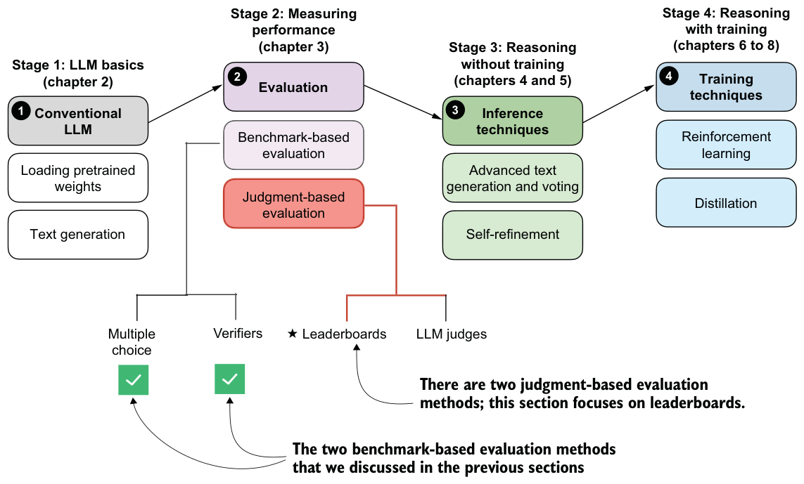
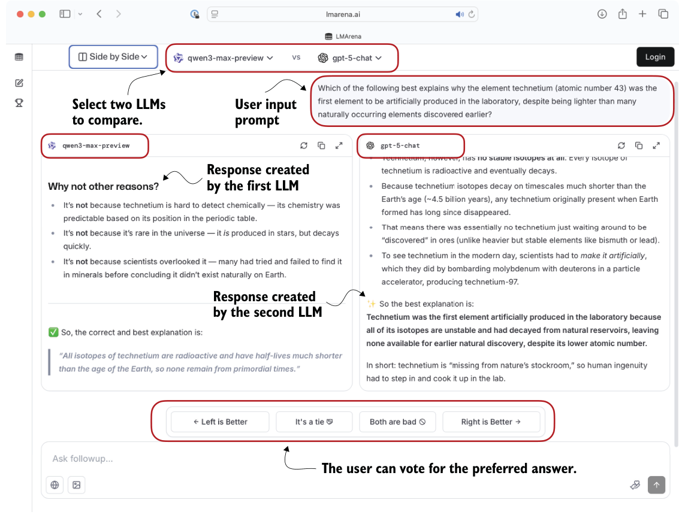

F.4Comparing models using preferences and leaderboards
So far, we’ve covered two methods that offer easily quantifiable metrics such as model accuracy. But none of the methods discussed so far evaluate LLMs in a more holistic way, including the style of the responses. In this section, as illustrated in figure F.4, we’ll discuss a judgment-based method: LLM leaderboards.

The leaderboard method is a judgment-based approach in which models are ranked not by accuracy values or other fixed benchmark scores but by user (or another LLM’s) preferences regarding their outputs. A popular leaderboard is Arena (formerly Chatbot Arena, https://arena.ai/leaderboard/text), where users compare responses from two models, either user-selected or anonymous, and vote for the one they prefer, as shown in figure F.5.

These preference votes, which are collected as shown in figure F.5, are then aggregated across all users into a leaderboard that ranks different models by user preference. In the remainder of this section, we’ll implement a simple example of a leaderboard.
Let’s consider users prompting different LLMs in a setup similar to figure F.5. The following list represents pairwise votes where the first model is the winner:
votes = [
("GPT-5", "Claude-3"),
("GPT-5", "Llama-4"),
("Claude-3", "Llama-3"),
("Llama-4", "Llama-3"),
("Claude-3", "Llama-3"),
("GPT-5", "Llama-3"),
]In this list, each tuple in the votes list represents a pairwise preference between two models, written as (winner, loser). So ("GPT-5", "Claude-3") means that a user preferred GPT-5’s answer over a Claude-3 model answer.
In the remainder of this section, we’ll turn the votes list into a leaderboard. We’ll use the popular Elo rating system, which was originally developed for ranking chess players. Each model will start with a baseline score. Then, after each comparison and preference vote, the model’s rating will be updated. If a user prefers the current model over a highly ranked model, the current model will receive a relatively large rating update and move higher in the leaderboard. Conversely, if the current model wins against a low-ranked model, its rating increases only a little. (If the current model loses, it is updated in a similar way, but ranking points are subtracted instead of added.)
The following listing shows the code to turn these pairwise rankings into a leaderboard.
def elo_ratings(vote_pairs, k_factor=32, initial_rating=1000):
ratings = {
model: initial_rating
for pair in vote_pairs
for model in pair
}
for winner, loser in vote_pairs: expected_winner = 1.0 / (
1.0 + 10 ** ((ratings[loser] - ratings[winner]) / 400.0)
)
ratings[winner] = (
ratings[winner] + k_factor * (1 - expected_winner)
)
ratings[loser] = (
ratings[loser] + k_factor * (0 - (1 - expected_winner))
)
return ratingsThe elo_ratings function in listing F.4 takes votes as input and turns it into a leaderboard, as follows:
ratings = elo_ratings(votes, k_factor=32, initial_rating=1000)
for model in sorted(ratings, key=ratings.get, reverse=True):
print(f"{model:8s} : {ratings[model]:.1f}")This results in the following leaderboard ranking, where the higher the score is, the better:
GPT-5 : 1043.7
Claude-3 : 1015.2
Llama-4 : 1000.7
Llama-3 : 940.4So how does this work? For each pair, we compute the expected score of the winner using the following formula:
expected_winner = 1 / (1 + 10 ** ((rating_loser - rating_winner) / 400))The expected_winner value is the model’s predicted chance to win in a no-draw setting based on the current ratings. It determines how large the rating update is.
Each model starts at initial_rating = 1000. If the winner and loser’s ratings are equal, we have expected_winner = 0.5, which indicates an even match. In this case, the updates are as follows:
rating_winner + k_factor * (1 - 0.5) = rating_winner + 16
rating_loser + k_factor * (0 - (1 - 0.5)) = rating_loser - 16If a heavy favorite (a model with a high rating) wins, we have expected_winner ≈ 1. The favorite gains only a small amount and the loser loses only a little:
rating_winner + 32 * (1 - 0.99) = rating_winner + 0.32
rating_loser + 32 * (0 - (1 - 0.99)) = rating_loser - 0.32But if an underdog (a model with a low rating) wins, we have expected_winner ≈ 0, and the winner gets almost the full k_factor points, while the loser loses about the same number of points:
rating_winner + 32 * (1 - 0.01) = rating_winner + 31.68
rating_loser + 32 * (0 - (1 - 0.01)) = rating_loser - 31.68Order matters
votes pairs, run the elo_ratings function multiple times, and average the resulting ratings.Leaderboard approaches such as the one described here provide a more dynamic view of model quality than static benchmark scores. But the results can be influenced by user demographics, prompt selection, and voting biases. Benchmarks and leaderboards can also be gamed, and users may select responses based on style rather than correctness. Finally, compared to automated benchmark harnesses, leaderboards do not provide instant feedback on newly developed variants, which makes them harder to use during active model development.